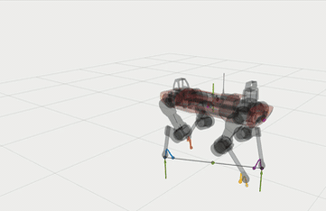
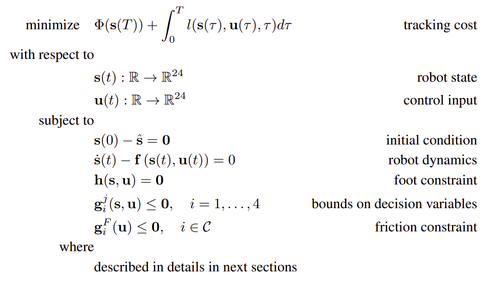
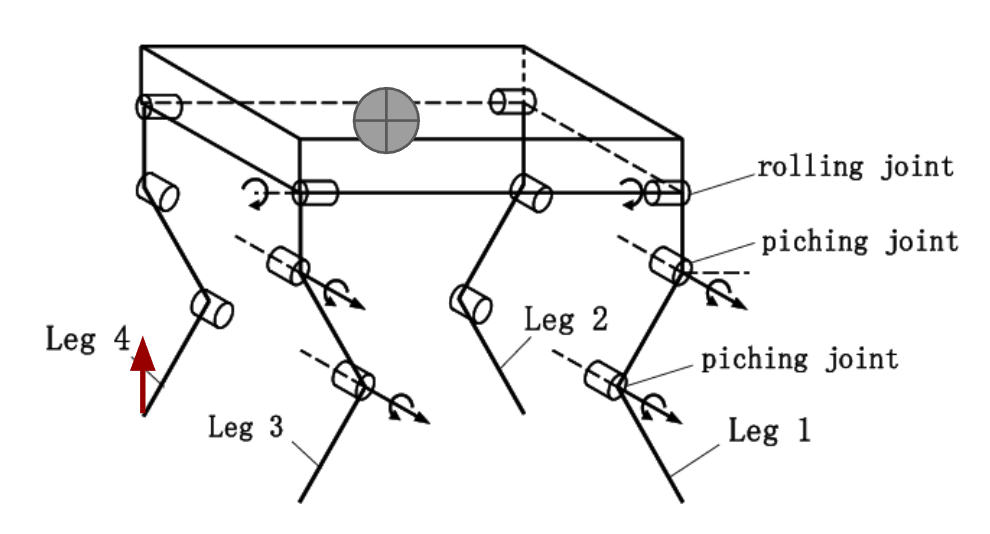
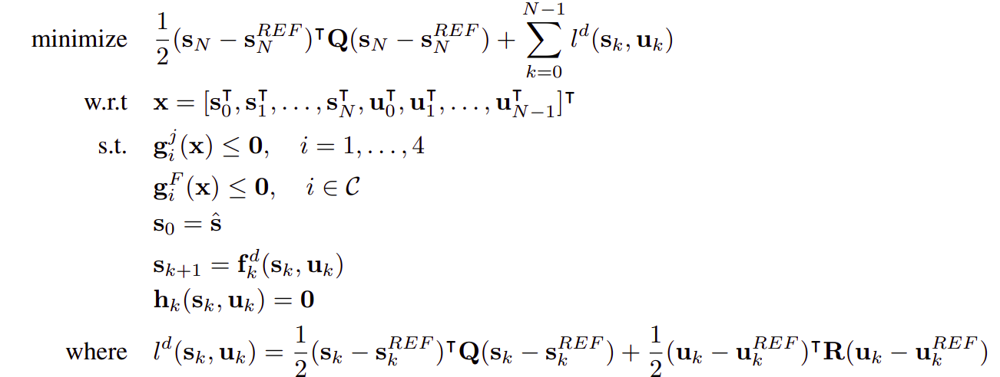
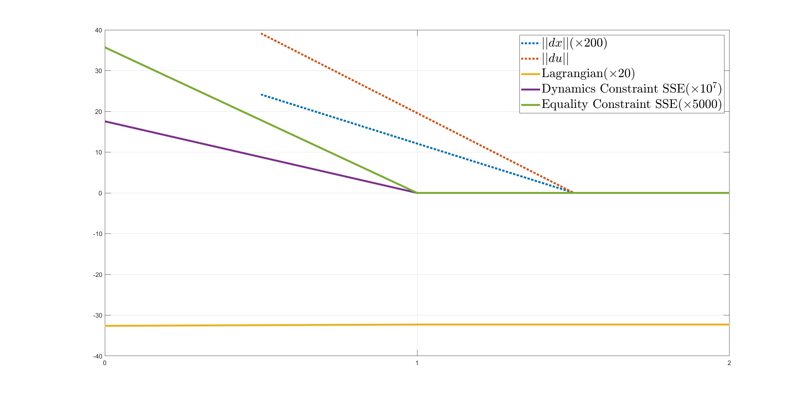
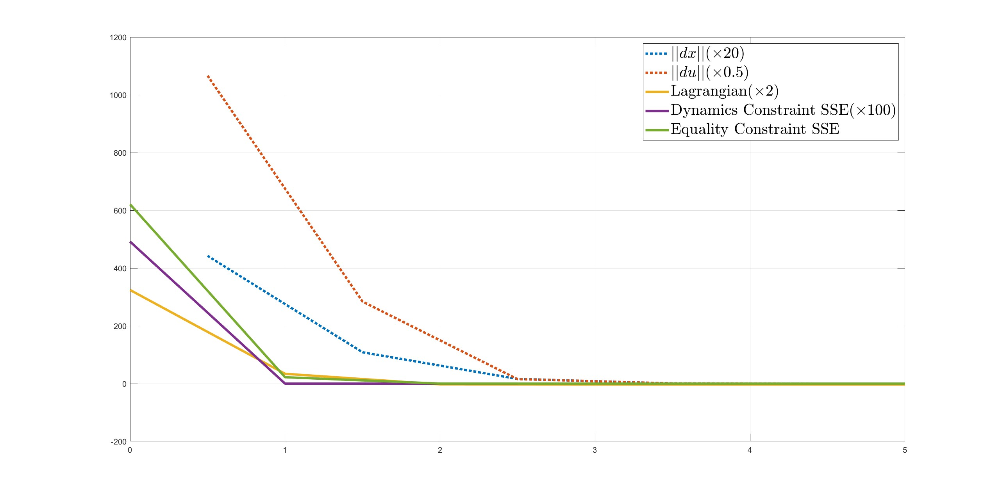

|
This is my group project within the course 24-785: Engineering Optimization at Carnegie Mellon University in Fall 2022 semester. Some key points:
Abstract. The control of dynamic-legged locomotion poses a significant challenge due to the under-actuation of the system and the uncertainty inherent in the external environment. In this project, we implemented a control framework based on nonlinear model predictive control (NMPC) to enable the dynamic walking of a quadruped robot. The final deliverable is a controller that can control the ANYmal robot in simulation to walk steadily on flat ground with a trotting gait using the OCS2 toolbox and the sequential quadratic programming (SQP) solver. To achieve this, we solved the optimization problem using real-time iteration, filter-based line search, and constraint projection. Our results indicate that the solver is sensitive to the initial guess of states and is able to find a local minimum that is very close to the global minimum, as validated based on physics. For more details, please check our report.  IntroductionControl of highly dynamic legged robots has been a challenging problem due to the under-actuation of the body during many gaits and constraints placed on the ground reaction forces. For example, during dynamic gaits such as trotting, the body of the robot is always under-actuated. Additionally, ground reaction forces must always remain in a friction cone to avoid slipping. With certain assumptions made on the base’s orientation and angular velocity, the planning problem for legged robots can be formulated as a convex optimization problem, which can be solved within a Model Predictive Control (MPC) scheme. Our goal is to determine the motion of the robot using the ground reaction forces, as these are the only external forces acting on the quadruped robot system. At the same time, by controlling the velocity of the foot, we can ensure a smooth swing and touchdown behavior. Furthermore, we employ a range of equality and inequality constraints to ensure that the robot’s behavior satisfies the specified gait and avoids foot-slip. To ensure that the quadratic programming (QP) subproblem in each SQP iteration is convex, we use a quadratic approximation to obtain a positive semi-definite Hessian. Additionally, constraint projection is employed to eliminate equality constraints and improve computational performance. Our results indicate that the solver is sensitive to the initial guess of states and may break for a poor initial guess. MethodBasic quadruped locomotion is driven by tracking a predefined trajectory of states and control inputs which are generated from a fixed gait schedule. Our overall optimization problem is to minimize both the state tracking error and control input tracking error of the robot. This naturally forms a multi-objective problem which is commonly handled via a weighted sum approach. In the MPC framework, at each time stamp, a constrained trajectory optimization is quickly solved to obtain the control signal. In this course project, we will mainly focus on how to solve this problem at one MPC step and analyse the results. The general formulation of the optimal control problem can be given by:  Robot Dynamics The quadruped robot can be modeled as a set of four fully actuated limbs attached to an unactuated 3D rigid body. Each limb has three joints that can be controlled. From the above equation, we may assume that we have sufficient control authority in the robot’s joints. With proper transformation, we can derive the centroidal dynamics. In fact, we did not use these derivations for implementation, instead, we used Pinocchio to generate fast forward and inverse dynamics from robot configuration. However, the above derivations provide a better understanding on the robot configuration and variable definition. Objective FunctionThe modes and their switching times are assumed to be fixed in our project, hence the notations dependent on them can be simplified. To form the objective function, we use a weighted sum of multiple cost functions which are the quadratic tracking errors of states and inputs. $$Q$$ and $$R$$ are positive definite weighting matrices. These quadratic functions are convex. In the quadruped robot walking problem, we can make the terminal cost and the stage cost the same. Because in walking MPC, the final state is nothing special and we do not really have a final goal. Foot Equality ConstraintsIn our problem, we assume that a particular gait cycle is predefined within a set of contact switching times. We want to ensure that the expected touch-down takes place according to the switching schedule. Therefore, all equality constraints are posed at potential contact points, which could be active or inactive Inequality ConstraintsTo guarantee that our planner produces dynamically feasible trajectories and forces that would also respect the system’s inherent operating limits, the following friction constraint is introduced. Additionally, we have simple bounds for decision variables. These boundaries ensure that the robot’s joints do not exceed the limits of position, velocity and torque, while ensuring that the robot is not broken by excessive ground reaction forces. Whole-body ControllerThis section serves as the description of the low-level architecture for the quadruped locomotion, not for the optimization problem. The whole-body controller computes the desired joint torques based on the solution from whole-body planner. In our project, we plan to divide the whole-body control into ground force control and swing leg control. We also propose to use a PD controller to compute joint torques for tracking the optimized swing trajectory in the NMPC solution for each foot. Sequential Quadratic ProgramTo convert the continuous optimum control issue into a finite-dimensional nonlinear program, we take a direct multiple-shooting strategy (NLP). Because MPC computes control inputs across a receding horizon, and when using a SQP technique, the prior solution may be shifted to effectively warm-start the problem. We replicate the end state of the prior solution and initialize the inputs with the references generated for new portions of the shifted horizon for which there is no initial guess. As an overview of the approach described in the following sections, a pseudo-code is provided in the Algorithm below, referring to the relevant equations used at each MPC step. The QP is solved using HPIPM, which will be concisely described later. RK4 is applied at each time step for the dynamics constraint function. The other variables, objective function, and constraints are simply discretized into discrete counterparts. We then obtain the following discretized problem:  This problem is highly dimensional, at each time step we have to calculate a batch of constraints, and using the active set method to deal with inequality constraints is complicated. Moreover, it is possible to prove the stability of the MPC framework with the relaxed barrier function. Therefore, all inequality constraints were handled through the penalty cost. We used relaxed barrier functions in this project. This projected problem now only contains costs and system dynamics but has stage-wise structure, hence solving the QP only requires Ricatti iteration via HPIPM, the Riccati-based interior-point method solver we use, which has been tailored to exploit the particular structure of the obtained QP. AnalysisIn this study, we focus on the standing mode of a robot because its state is more constant and easier to analyze than when it is walking. To solve the NLP, we employed the Sequential Quadratic Programming (SQP) method. When the change in the Lagrangian between two consecutive iterations was less than the specified tolerance (1e-4), the solver was terminated and the solutions were output. This indicates that the KarushKuhn-Tucker (KKT) condition was satisfied within the specified tolerance, and a local minimum was found. However, due to the non-convexity of our problem, we cannot guarantee that the solver found the global minimum. Nevertheless, our solution is likely to be very close to the global minimum based on physical principles.  The initial guess is an important factor in the optimization of high-dimensional, nonlinear problems such as this one. Through various tests, we have found that a good initial guess is essential in obtaining the results. In this case, the guess for the state trajectory was the default standing state of the robot, while the guess for the control input trajectory was the most ideal input as previously mentioned. Using this initial guess, the SQP algorithm was able to find the solution in just two iterations. Figure shows the scaled results of the change in various variables during the optimization process. After the first iteration, the Lagrangian and constraint violations became extremely small, and in the second iteration, the step length obtained from solving the quadratic programming problem was also very small. The whole SQP was completed in an average of 8 ms.  In addition to using a good initial guess, we also tested some very poor initial guesses. For instance, setting the initial guess to be a zero vector resulted in the solver needing five iterations to find a solution. If we set all decision variables to 1, the solver was unable to find a solution and was terminated because the step size obtained from the line search became too small (<1e-4), while the equality constraints violation remained very large. This emphasizes the importance of a good initial guess in the optimization of high-dimensional, nonlinear problems. We also conducted a detailed analysis of the effects of different initial guesses for the state and control inputs on the solution through various tests. First, we combined a good guess of the state trajectory with a guess of multiple input trajectories. We simply used a number multiplied by the optimal initial guess of the input trajectory and recorded the results. In the left side of the figure, the multiplier is negative and the initial guess is infeasible because it is impossible to produce a negative ground reaction force. We can see that these significantly infeasible guesses had a worse effect on the solver’s performance. ConclusionsIn this project, we focused on the control of dynamic walking for a quadruped robot. To achieve this, we formulated a trajectory optimization problem and utilized a nonlinear model predictive control scheme to determine the appropriate control inputs for a walking quadruped robot. The continuoustime problem was discretized into a NLP problem, which was then solved using a sequential quadratic programming algorithm. To ensure that the quadratic programming subproblem in each SQP iteration was convex, we employed a quadratic approximation to obtain a positive semi-definite Hessian. Additionally, constraint projection was used to eliminate equality constraints and accelerate the solution process. Through the use of the OCS2 Toolbox and the Robot Operating System (ROS), we were able to control the robot to stand and walk stably in simulation. Furthermore, we conducted various tests to analyze the properties of local and global optimality, initial guesses, and parameters. Our results indicate that the solver is able to find the local optimum and is likely to be very close to the global optimum. Additionally, we found that the solver is highly sensitive to initial guesses of the state trajectory. A range of feasible parameter values was obtained through manual tuning. |